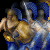

RM Brawl 1.3 Patch Notes
Small Island map has been updated and civilizations have been reworked to have more balanced water fights.
Bronze age unit upgrades are more expensive, but are giving more meaningful bonuses.
Change-logs have been updated to match patch 1.3
Check this to see what all has changed since AOE Rise of Rome 1.0a
Check this to see what all has changed since UPatch 1.1 R4
Villagers and resources
Linen Cloth and Akinaka got reworked to have more synergy with other technologies and build paths.
Resource building have more loose placement restriction.
 Linen Cloth
Linen Cloth
Food Cost: 40 -> 60
wood Cost: 70 -> 30
Requirement: Leather armor infantry -> Woodworking
 Akinaka
Akinaka
Food Cost: 80 -> 80
Gold Cost: 30 -> 40
Requirement: Scale armor infantry -> Artisanship
 Wheel
Wheel
Research time: 50s -> 60s
 Farm, Storage Pit, Granary
Farm, Storage Pit, Granary
Max elevation difference 0 -> 1
 Small island
Small island
Greatly increased the amount of small non player islands on the map
Technology changes
Scale armors more expensive.
Logistics bonus focuses in offensive plays.
 Scale armor infantry
Scale armor infantry
Food Cost: 100 -> 125
Gold Cost: 50 -> 75
Scale armor archers
Food Cost: 125 -> 150
Gold Cost: 50 -> 100
 Scale armor cavalry
Scale armor cavalry
Food Cost: 150 -> 175
Gold Cost: 50 -> 125
 Chain mail infantry
Chain mail infantry
Food Cost: 125 -> 150
Gold Cost: 100 -> 100
 Chain mail archers
Chain mail archers
Food Cost: 150 -> 175
Gold Cost: 100 -> 125
 Chain mail cavalry
Chain mail cavalry
Food Cost: 175 -> 200
Gold Cost: 100 -> 150
 Logistics
Logistics
Food Cost: 180 -> 220
Gold Cost: 100 -> 140
New bonus: All Barrack units deal bonus damage against towers
Barrack units
Attack Towers none -> -35
 Slinger
Slinger
Attack Towers +1
Clubman/Axeman
Attack Towers +3
Swordsmen and Legion
Attack Towers +4/+5/+6/+7
Unit and building changes
Cavalry line upgrades gold cost changed to wood cost.
Priest and Temple cheaper, but priest has greatly increased training time.
 Heavy Cavalry (upgrade)
Heavy Cavalry (upgrade)
Food Cost: 350 (no change)
Gold Cost: 125 -> 0
Wood Cost: 0 -> 175
 Cataphract (upgrade)
Cataphract (upgrade)
Food Cost: 1200 (no change)
Gold Cost: 750 -> 0
Wood Cost: 0 -> 900
 Armored Elephant (upgrade)
Armored Elephant (upgrade)
Research time: 150s -> 200s
 Improved Bowmen & Composite Bowmen
Improved Bowmen & Composite Bowmen
Armor Stone Defense & Archers: -3 -> -4
 Chariot Archer
Chariot Archer
Reload time: 1.45 -> 1.5 (partial revert)
Frame delay: 12 -> 6 (revert)
Training time: 44s -> 46s
 Priest
Priest
Gold Cost: 125 -> 90
Training time: 50s -> 90s
Temple
Wood Cost: 200 -> 150
 Small Wall
Small Wall
Stone Cost: 8 -> 4 (partial revert)
 Medium Wall
Medium Wall
Stone Cost: 8 -> 4 (partial revert)
 Fortified wall
Fortified wall
Stone Cost: 8 -> 4 (partial revert)
Civilizations
Some civilizations had too straight forward game play and few others had some balance issues still left.
Assyrian
Bonus Archers fire 33% faster -> 20% faster
Technologies enabled Improved Bowman, Alchemy
Greek
Bonus All Government Center upgrades available at Bronze Age -> Alchemy and Aristocracy available at Bronze Age
Hittite
Technologies disabled Guard Tower, Ballista Tower
Minoan
Bonus Removed Composite Bowmen +2 range
Bonus Removed Fishing ships work 20% faster (revert)
New bonus Ships cost -20% (revert)
New bonus Land ranged units are trained 33% faster
Technologies disabled Slinger, Trireme, Catapult Trireme, Juggernaught
Palmyra
Technologies disabled Guard Tower, Ballista Tower
Persian
Technology disabled Akinaka
Phoenician
Technologies disabled Guard Tower, Ballista Tower
Sumerian
Bonus Stone Thrower, Catapult, Heavy Catapult fire 50% faster -> 40% faster (revert)
Technologies disabled Chain mail, Heavy Horse Archer
Technologies enabled Alchemy, Fanaticism, Legion, Metallurgy
Yamato
Technologies disabled Catapult Trireme, Juggernaught
Bug fixes
Couple new technologies and units were not linked to their bonuses.
 Egyptian SC
Egyptian SC
Bonus hit points were not applied to Scythe Chariot after Metallurgy was researched.
 Greek
Greek
Juggernaught and Centurion were not available.